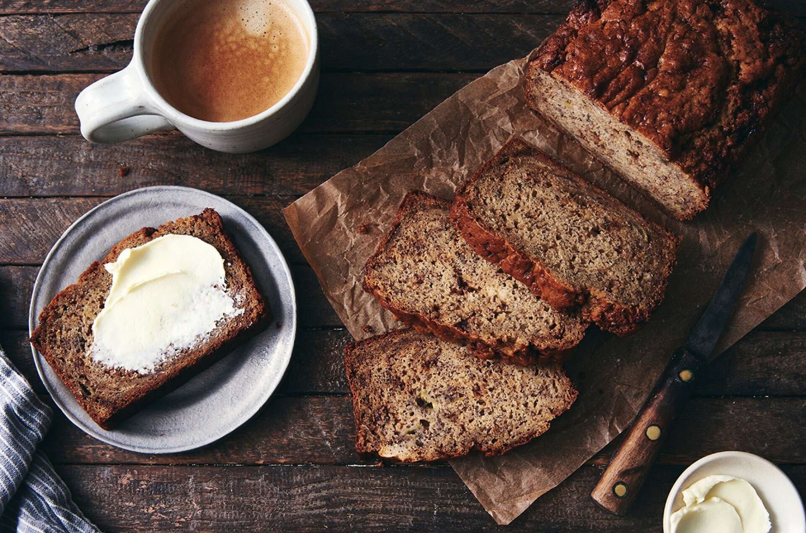

Sourdough Banana Bread

Recipe taken from King Arthur Baking
Feeding your sourdough starter? Taking the discard and putting it in banana bread gives this favorite quick loaf a subtle tang that nicely balances the sweetness of the bananas and honey. Plus, your bread will stay fresh longer — what a great way to use up any excess starter you might otherwise throw away!
| PREP |
BAKE |
TOTAL |
| 15 mins |
1 hr 5 mins to 1 hr 15 mins |
1 hr 40 mins |
Yield: 1 loaf, 12 generous servings.
Ingredients
- 8 tablespoons (113g) unsalted butter, at cool room temperature
- 2/3 cup (142g) light brown sugar or dark brown sugar, packed
- 1 teaspoon Pure Vanilla Extract
- 1 teaspoon Cinnamon
- 1/4 teaspoon Nutmeg
- 1 teaspoon Baking Powder
- 1 teaspoon Baking Soda
- 1 teaspoon Salt
- 1 3/4 cups (397g) mashed ripe banana, from about 1 3/4 pounds unpeeled bananas
- 1/4 cup (85g) Honey
- 2 large Eggs
- /2 cup (113g) sourdough starter, unfed/discard
- 2 cups (240g) All-Purpose Flour
- 3/4 cup (85g) chopped nuts, optional
Instructions
- Preheat the oven to 325°F. Lightly grease a 9" x 5" loaf pan; or a 12" x 4" tea loaf pan.
- In a large bowl, combine the butter, sugar, vanilla, cinnamon, nutmeg, baking soda, baking powder, and salt, beating until smooth.
- Add the mashed bananas, honey, eggs, and sourdough starter, again beating until smooth.
- Add the flour then the nuts, stirring just until smooth.
- Transfer the batter to the prepared loaf pan, smoothing the top. Let it rest at room temperature for 10 minutes.
- Bake the bread for 45 minutes, then gently lay a piece of aluminum foil across the top to prevent over-browning.
- Bake for an additional 25 minutes (20 minutes if you're baking in a tea loaf pan). Remove the bread from the oven; a long toothpick or thin paring knife inserted into the center should come out clean, with a few wet crumbs clinging to it. The tester shouldn't show any sign of uncooked batter. If it does, bake the bread an additional 5 minutes, or until it tests done.
- Allow the bread to cool for 10 minutes in the pan. Remove it from the pan and cool completely on a rack.
- Store leftover bread, tightly wrapped, at room temperature for several days. Freeze for longer storage.